| 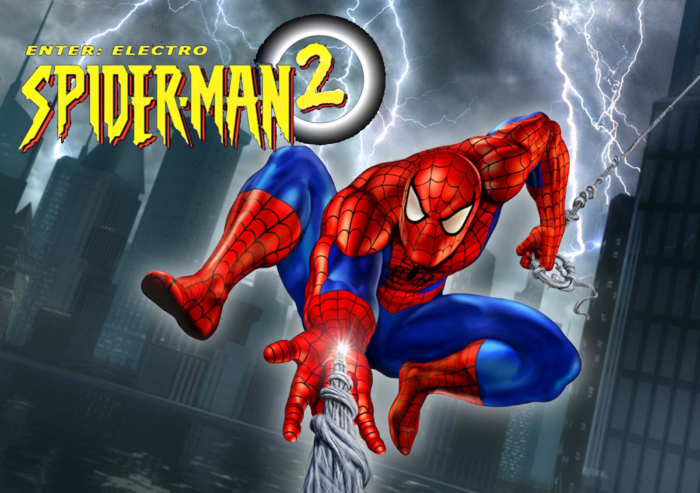 | Spider-Man 2: Enter the Electro Spider-Man 2: Enter the Electro lapidou a fórmula de sucesso do primeiro game e implementou novos elementos na jogabilidade como o sistema de “trava de mira” para aumentar a precisão de disparos e um movimento que permitia arremessar objetos ou desarmar inimigos usando teias. |
| 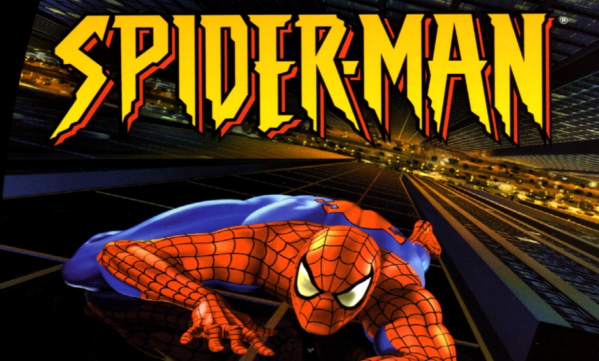 | Spider-Man (2000) Se você está na casa dos 30 anos, provavelmente deve ter jogado Spider-Man no primeiro Playstation. O título produzido pela Neversoft, mesmo estúdio de Tony Hawk’s Pro Skater foi marcante por colocar o Homem-Aranha em um mundo 3D com dimensões muito maiores e um nível de liberdade que não havia sido visto nas gerações anteriores. |
| 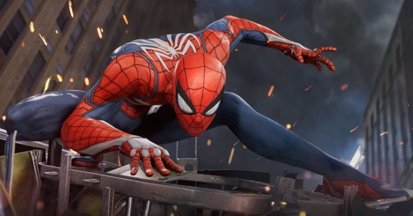 | Marvel’s Spider-Man (2018) O Homem-Aranha recebeu bons títulos enquanto a Activision contava com os direitos de utilização do personagem nos games, porém Marvel’s Spider-Man produzido pela Insomniac Games colocou os jogos em outro nível. |
| 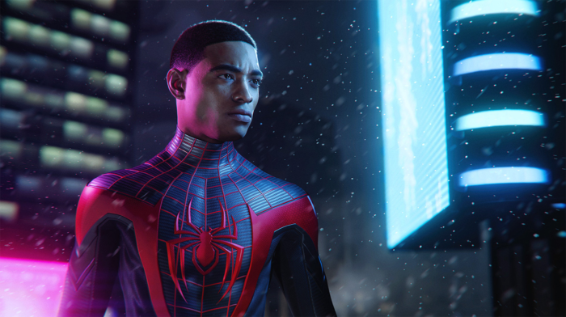 | Spider-Man: Miles Morales (2020) Spider-Man: Miles Morales seria uma expansão de Marvel’s Spider-Man, mas acabou se tornando um game solo e também um dos primeiros games de PS5 a serem anunciados. Apesar de compartilhem o mesmo DNA, é possível notar como a Insomniac procurou corrigir alguns problemas do título de 2018. |
| 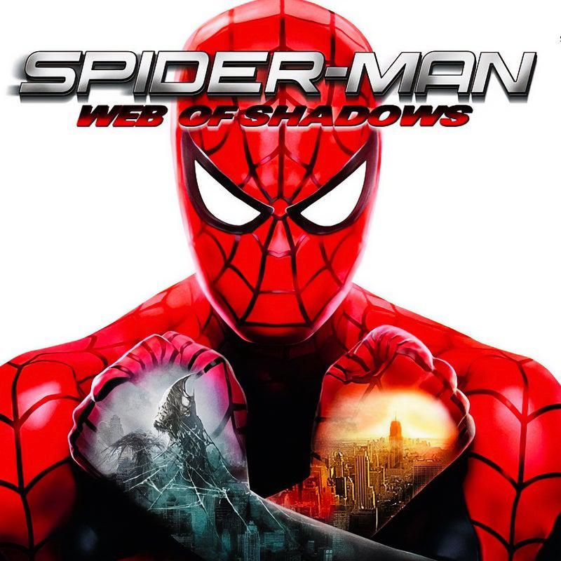 | Spider-Man: Web of Shadows Web Of Shadows faz uso de um sistema de evolução do personagem que irá destravar vários poderes e golpes especiais ao longo da sua jornada, além de introduzir uma nova dinâmica a franquia, conferindo maior liberdade ao jogador, que poderá optar por conduzir suas missões de forma mais altruísta ou um egocêntrica. |
| 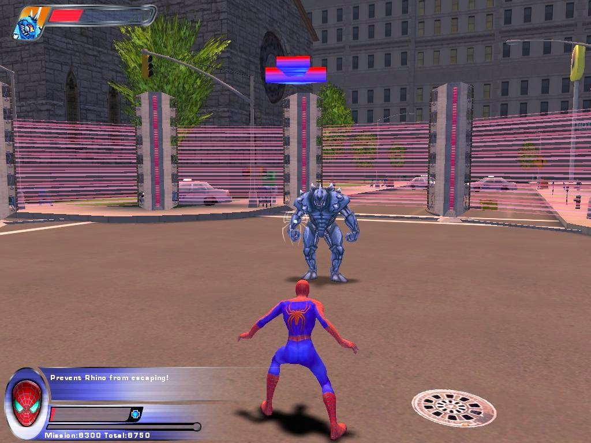 | Spider-Man 2 (2004) Spider-Man 2 é baseado no segundo filme protagonizado pelo ator Tobey Maguire. O jogo tinha um mundo aberto com muitas atividades, visual agradável para a época e apesar de ser baseado no filme, ainda contava com uma subtrama envolvendo a Gata Negra. Entretanto, o destaque do título era sua mecânica de web swing. |
| 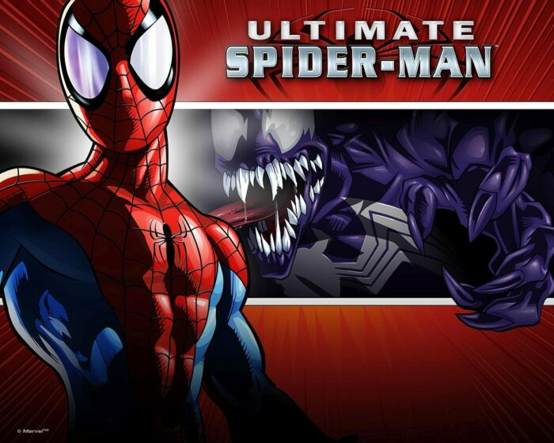 | Ultimate Spider-Man (2005) Ultimate Spider-Man foi baseado nas histórias do universo Ultimate, que embora tivesse Peter Parker como Homem-Aranha, apresentava versões diferentes de personagens do universo tradicional, conhecido como Universo 616. |
| 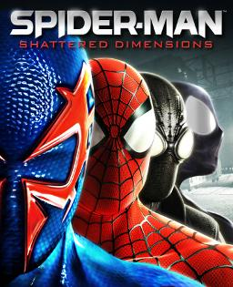 | Spider-Man: Shattered Dimension O jogo gira em torno de um artefato conhecido como Tablet of Order and Chaos. Quando é despedaçado durante uma luta entre o Espetacular Homem-Aranha e Mysterio , causa problemas com múltiplas realidades em todo o Multiverso Marvel . Madame Web recruta o Amazing Spider-Man e três versões alternativas do herói - Spider-Man Noir , Spider-Man 2099 e Ultimate Spider-Man—para restaurar o equilíbrio recuperando os fragmentos da tabuleta dos vilões dentro de suas respectivas dimensões. |
| 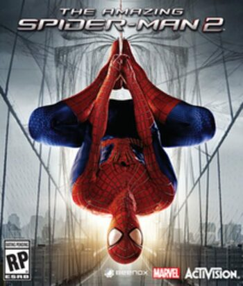 | The Amanzing Spider-Man: 2 The Amazing Spider-Man 2 é um jogo de ação-aventura de mundo aberto baseado no personagem da Marvel Comics, Homem-Aranha, e é uma sequência de The Amazing Spider-Man de 2012. |
| 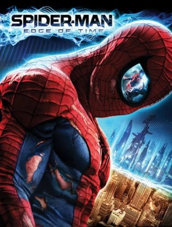 | Spider-Man: Edge of Time (2011) A história de Edge of Time começa quando o Homem-Aranha do futuro, Miguel O’Hara, do ano 2099, tem uma visão onde presencia a morte do Homem-Aranha atual, Peter Parker, pelas mãos de Anti-Venom. |
| 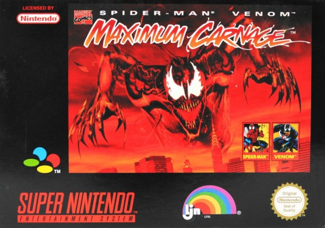 | Spider-Man and Venom: Maximum Carnage (1994) Spider-Man and Venom: Maximum Carnage aproveitou para colocar nos games, um dos arcos super populares dos quadrinhos nos anos de 1990. O momentoem que Homem-Aranha e Venom se uniram para enfrentar o Carnificina pela primeira vez. |